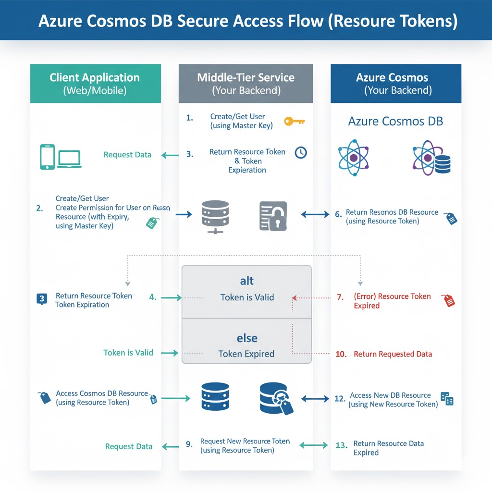

Authentication
Login methods
Master Key
You have both primary/secondary and direct use of Key/password
Resource token
- This approach require you to create (via SDK/Code) a CosmosDB user and its complicated.
- Master key is required to create resource token/permission.
- NOTE, resource token is not an RBAC, user can actually grant full access "Permission.ALL" as it uses master key. To prevent this, the resource token generator is best to be a middleware (another application), though it complicates things. But using resource token generator via a middleware you can custom control. (Just like SAS in Azure Storage but custom written) a. Authentication b. Time-based access
- Resource Token in SDK are short-lived (1 hour)
Entra ID
You can use RBAC with this
var client = new CosmosClient(
accountEndpoint: "your-account-endpoint",
// The DefaultAzureCredential automatically finds the Managed Identity
new DefaultAzureCredential()
);
Secure Resource Token.
To prevent user give full access need to implement a mid-tier service where user are not given master key but calls a service to retrieve master key. It's a pattern/architecture.
Since it's complex, resource token is not recommended.
(Below is created using Gemini - to get a gist, not an accurate diagram)

CosmosClient adminClient = new CosmosClient(
accountEndpoint: "your-account-endpoint",
authKeyOrResourceToken: "your-master-key" // WARNING: Keep this secure!
);
// Create the User
UserResponse userResponse = await adminClient.GetDatabase(databaseId)
.CreateUserAsync(id: cosmosDbUserId);
User user = userResponse.User;
/*
try
{
// Try to read the existing User object. This is the reuse step.
UserResponse userResponse = await adminClient.GetDatabase(databaseId)
.GetUser(cosmosDbUserId)
.ReadAsync();
user = userResponse.User;
}
*/
// Create a Permission for Read access to a specific container - MUST be called every time.
PermissionProperties permissionProperties = new PermissionProperties(
id: "readPermissionForContainer",
permissionMode: PermissionMode.Read,
container: adminClient.GetContainer(databaseId, "myContainer")
);
// Create the Permission on the User
PermissionResponse permissionResponse = await user.CreatePermissionAsync(
permissionProperties
);
//With this db user you then authenticate with
string resourceToken = permissionResponse.Resource.Token;
Authentication for external access
- Azure Data Factory Pipeline -> Managed Identity (Best for maintenance and security).
- GitHub/GitLab CI Pipeline -> Service Principal (with OIDC) (Best for external access without managed secrets).
For Managed Identity/Service Principal - both can use RBAC. The difference between managed identity and SP is that it is granted access to without password/certificate to authenticate.
Managed identities are application-centric, not user-centric.
Steps Step 1: Enable the Managed Identity on Azure Data Factory (ADF) You don't have to "create" the identity; you just enable it. The recommended type for your scenario is the System-Assigned Managed Identity.
- Go to your Azure Data Factory (ADF) resource in the Azure Portal.
- Navigate to the Managed Identities section (or Identity in newer portals).
- Set the System-Assigned status to On and save. Azure will automatically register this identity in Azure Active Directory (Azure AD). You'll get an Object ID (Principal ID).
Step 2: Grant the Managed Identity Access to Cosmos DB (Azure RBAC) This step uses Azure Role-Based Access Control (Azure RBAC) to give the ADF's new identity the specific permissions it needs on the Cosmos DB account.
- Go to your Azure Cosmos DB account in the Azure Portal.
- Navigate to Access control (IAM).
- Click Add -> Add role assignment.
- Select the desired role. For a pipeline that needs to write data, choose: Data Plane Access (Recommended): The built-in role Cosmos DB Built-in Data Contributor (or similar write access role). This grants only the necessary data access.
- On the Members tab: Set Assign access to to Managed identity.
- Select the Subscription your ADF is in.
- Select the Managed identity type as Data Factory.
- Find and select your specific Azure Data Factory instance (its name matches its system-assigned managed identity name).
- Complete the assignment.
Step 3: Configure the Linked Service in ADF Now you configure the connection in your ADF pipeline to use the identity, not a key.
- In Azure Data Factory Studio, create or edit a Linked Service for Azure Cosmos DB for NoSQL.
- Under Authentication type, select System Managed Identity (or Managed Identity).
- Enter the Cosmos DB Account Endpoint and Database name. The ADF runtime will now automatically use the system-assigned managed identity to authenticate using a token. You never entered a key or a secret. Minimal maintenance achieved!